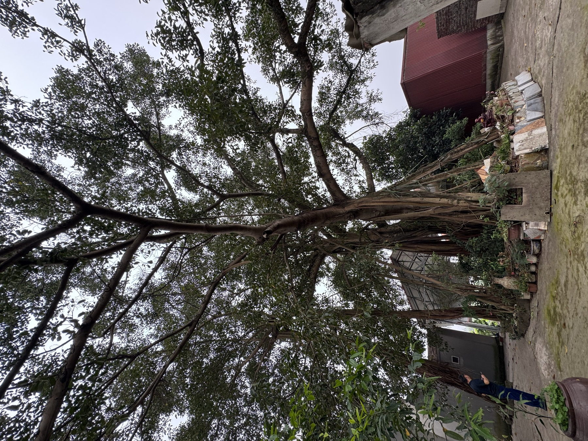

Tín ngưỡng thờ
Nhị vị Thánh Mẫu
Từ Quang · Từ Minh

Đình Phú Cốc toạ lạc ngay giữa làng Phú Cốc — vùng đất thuần đồng bào dân tộc Mường gốc Hoà Bình, nơi truyền thuyết kể về chín mươi chín quả đồi nhấp nhô giữa miền bán sơn địa. Đây là ngôi đại đình chung của bốn thôn Phú Cốc, trung tâm sinh hoạt tín ngưỡng và cộng đồng được người dân gìn giữ qua nhiều thế hệ.
Đình thờ Nhị vị Thánh Mẫu — hai bà Từ Quang và Từ Minh — gắn với truyền thuyết "Đầm Hai Cô" được lưu truyền tại địa phương. Năm Khải Định thứ chín (1924), triều đình ban hai đạo sắc phong, đến nay vẫn được lưu giữ trang trọng trong hậu cung, là di vật tiêu biểu nhất của ngôi đình.
Trải qua thời gian, đình được trùng tu lớn vào năm 2010 theo kiểu kiến trúc cổ với mái đao cong, lưỡng long chầu nguyệt. Không chỉ là chốn linh thiêng, đình từng là nơi mở lớp học cho nhiều thế hệ người dân trong những năm kháng chiến.
| Hạng mục | Mô tả |
|---|---|
| Tổng thể | Đại bái – tả hữu vu – hậu cung, hướng Nam, khuôn viên hơn 8.110 m² |
| Đại bái | Năm gian hai chái, bốn mái đao cong, lưỡng long chầu nguyệt, lợp ngói ri |
| Hậu cung | Ba gian, nơi đặt long ngai bài vị và lưu giữ hai đạo sắc phong |
| Di vật tiêu biểu | 27 di vật: cửa võng, hoành phi, câu đối, kiệu rước, bộ bát bửu… |
| Hai sắc phong | Khải Định 9 (1924), gia phong "Trinh Uyển Dực Bảo Trung Hưng" |
| Trùng tu | Trùng tu lớn năm 2010 theo kiểu kiến trúc cổ truyền |
Đình Phú Cốc hướng tới trở thành điểm đến văn hóa – di sản tiêu biểu trong hành trình du lịch cộng đồng Mường Cốc; gìn giữ giá trị tín ngưỡng và kiến trúc của người Mường, đồng thời truyền tải một cách chân thực, tôn trọng các giá trị lịch sử – văn hóa tới du khách và thế hệ mai sau.